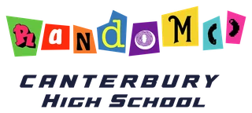
random()Canterbury High School · Fort Wayne88.9Best OPR, 2025–26
13/71Rank at Indiana events
All-time: 17 events · 43-47-0 qualifying · 17 awards · 2 event wins
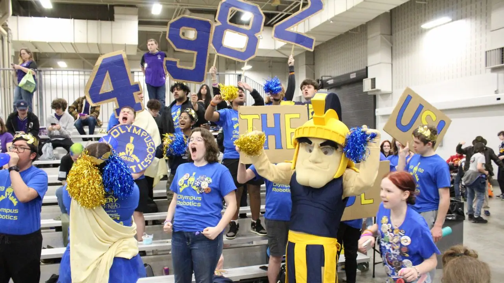
Northeast Indiana high school robotics.
2026 FRC season · final
Final 2026 results · updated Nov 10, 2026
Every Northeast Indiana team in the FIRST Robotics Competition. Tap a team for its season, awards, closest game and coverage.
Open the Top 10 display: the same district-points order on one big screen, with team spotlights and replay previews.
District standings are the official order: teams earn FIRST Indiana district points for qualification wins, being picked for playoffs, playoff runs and awards. Points decide who advances to the state championship.
Sort by EPA reorders the list by their final 2026 Statbotics EPA (Expected Points Added): an estimate of how many points a robot adds to its alliance each match. Think of it like points per game. It is a model, so it can miss early in a season; the official order is always district points.
Win-loss records count official matches only (district events, state and world championship). Matches are played in three-team alliances whose partners change every match, so a record reflects the team and its partners.
 45-15W-L#6250 points118.7EPA2× event winnerWorld ChampionshipImagery AwardInnovation in Control Award+1 more
45-15W-L#6250 points118.7EPA2× event winnerWorld ChampionshipImagery AwardInnovation in Control Award+1 more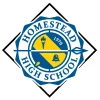
Homestead High SchoolOlympus Robotics · FRC 4982Fort Wayne 24-25W-L#21136 points58.8EPAEvent winnerState qualifier
24-25W-L#21136 points58.8EPAEvent winnerState qualifier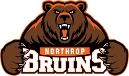
Northrop High SchoolCyBears · FRC 10434Fort Wayne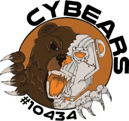
21-27W-L#2897 points35.8EPAEvent winnerEvent finalistState qualifier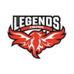
North Side High SchoolIron Legends · FRC 9119Fort Wayne 21-21W-L#3289 points75.1EPAState qualifierRising All-Star Award
21-21W-L#3289 points75.1EPAState qualifierRising All-Star Award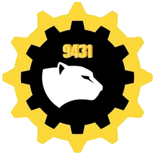
21-20W-L#3384 points68.5EPAState qualifier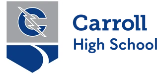
Carroll High SchoolCarroll Charger Robotics · FRC 10332Fort Wayne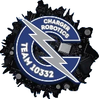
9-17W-L#4935 points34.8EPAJudges' Award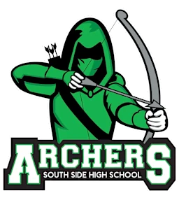
South Side High SchoolApex Archers · FRC 10172Fort Wayne 7-17W-L#5528 points21.1EPARising All-Star Award
7-17W-L#5528 points21.1EPARising All-Star Award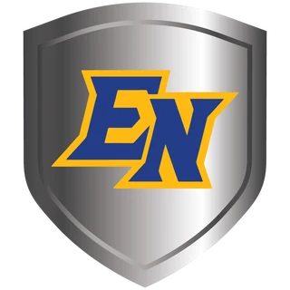
East Noble High SchoolKnight Robotics · FRC 8103Kendallville 10-17W-L#5723 points35.1EPA
10-17W-L#5723 points35.1EPA 9-16W-L#6119 points29.5EPA
9-16W-L#6119 points29.5EPA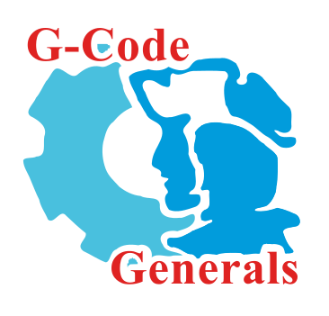
7-17W-L#6219 points14.6EPARecords, events and awards: The Blue Alliance, captured Nov 10, 2026. Ratings: Statbotics EPA, final 2026 values (June 12, 2026 snapshot), shown as a secondary model rating. District rank is among 68 Indiana teams.
FIRST Tech Challenge
FTC uses smaller robots and a separate game. Its ratings (OPR) aren’t comparable to FRC’s EPA.

random()Canterbury High School · Fort WayneAll-time: 17 events · 43-47-0 qualifying · 17 awards · 2 event wins
 MG (Microchips & Guac)Madison-Grant Jr./Sr. High School · Fairmount
MG (Microchips & Guac)Madison-Grant Jr./Sr. High School · FairmountAll-time: 5 events · 12-13-0 qualifying · 1 award
Rookie team for 2026–27. First matches this season.
Latest
The newest results from the field and the latest local coverage of these teams.
Seen a story about a local team? Send it in.
Podcast
Members of The REFINERY break down Northeast Indiana robotics the way a sports show would: the standings, the stats, who's rising and who to watch.
Want a team on the show, or have a question for the hosts? Email the show.
Storylines
Won the Mishawaka and Lafayette district events, then reached the World Championship (Archimedes).
1×Won the Columbus district event.
1×Won the Mishawaka district event in just its second season.
WorldsEarned a trip to the World Championship (Daly) in Houston.
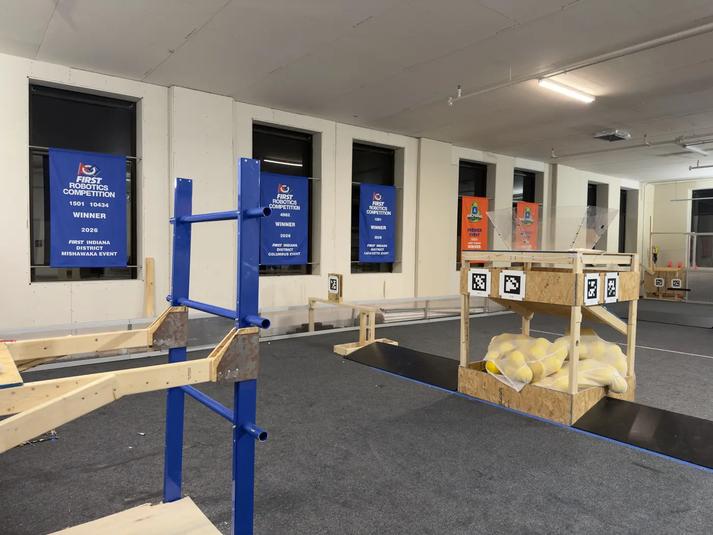
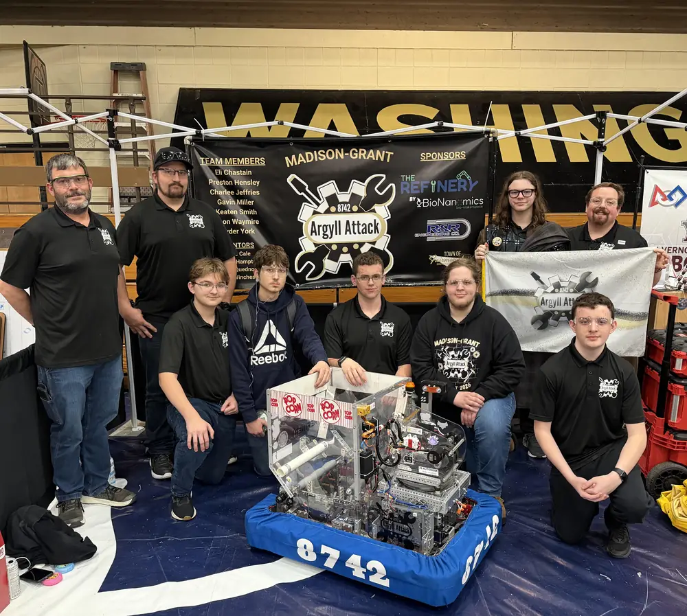
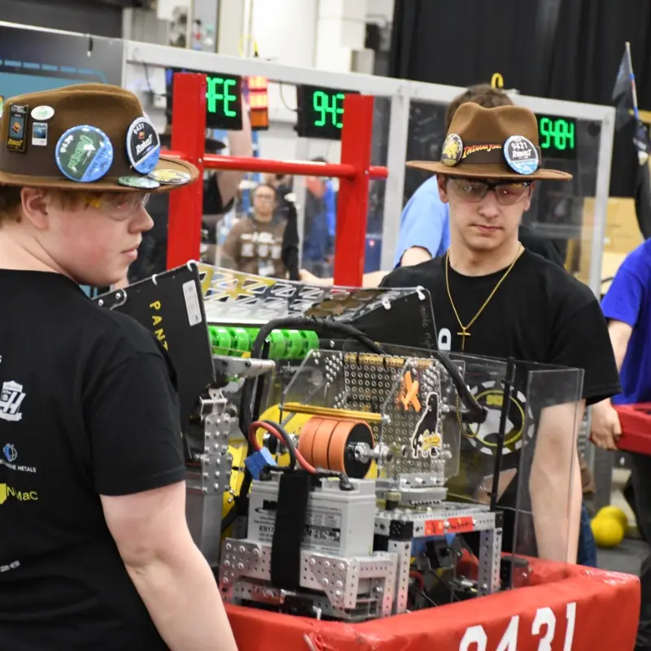
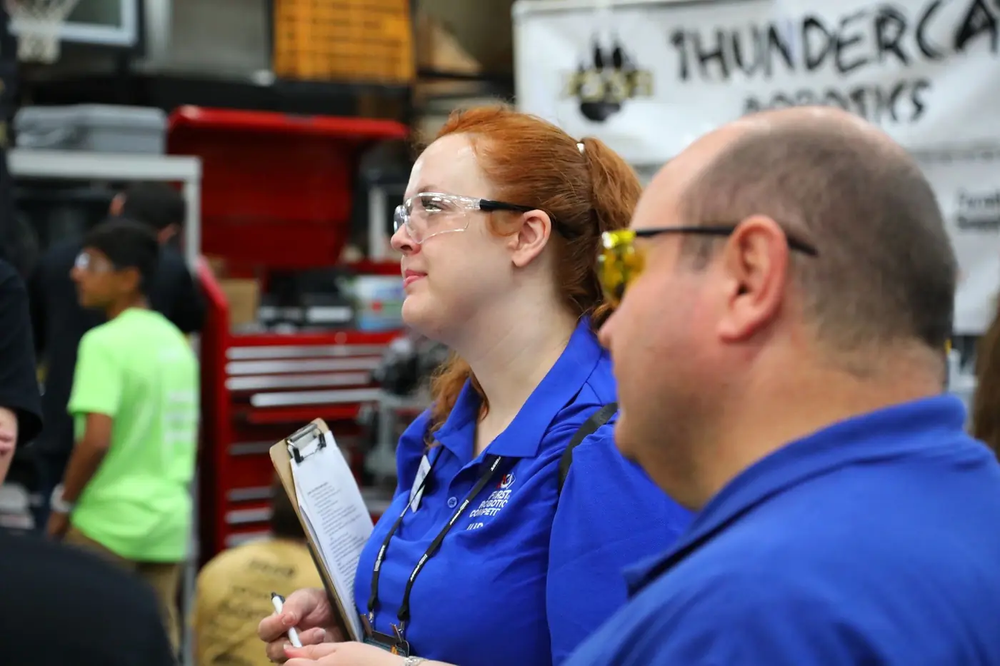
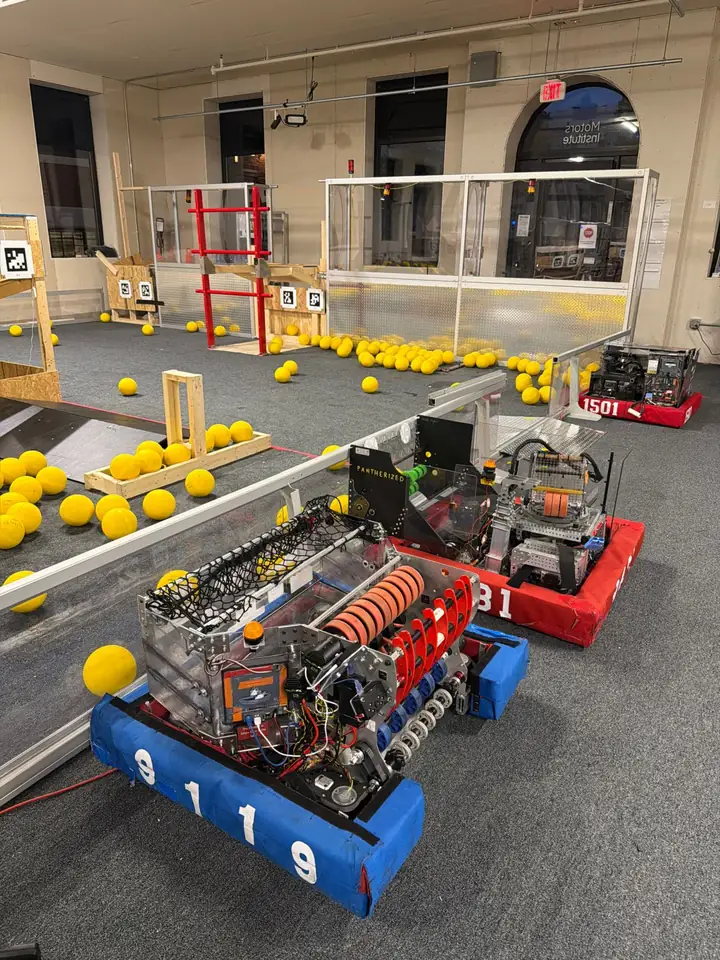
2026–27 season
Every Indiana FTC and FRC event this season, plus the World Championship in Houston.
Dec 5, 2026 · Westfield Middle School · Westfield, IN
Qualifying tournament. Top teams and award winners earn spots at the Indiana FTC State Championship.
31 teams entered; none from The REFINERY’s region yet.
Dec 6, 2026 · Westfield Middle School · Westfield, IN
Qualifying tournament. Top teams and award winners earn spots at the Indiana FTC State Championship.
2 of 25 teams entered are from The REFINERY’s region.
Jan 9, 2027 · Worldwide broadcast
FIRST reveals the 2027 game at noon ET. Teams start designing and building.
Feb 6, 2027 · Greenwood Middle School · Greenwood, IN
Qualifying tournament. Top teams and award winners earn spots at the Indiana FTC State Championship.
34 teams entered; none from The REFINERY’s region yet.
Feb 13, 2027 · Shoals Jr/Sr High School · Shoals, IN
Qualifying tournament. Top teams and award winners earn spots at the Indiana FTC State Championship.
1 of 34 teams entered is from The REFINERY’s region.
Feb 20, 2027 · Scrimmages nationwide
Unofficial practice events before the season counts. A local REFINERY scrimmage date has not been announced.
Feb 20, 2027 · Avon High School · Avon, IN
Qualifying tournament. Top teams and award winners earn spots at the Indiana FTC State Championship.
MG (Microchips & Guac)25638 · Madison-Grant Jr./Sr. High School1 of 34 teams entered is from The REFINERY’s region.
Feb 28, 2027 · Penn High School · Mishawaka, IN
Qualifying tournament. Top teams and award winners earn spots at the Indiana FTC State Championship.
MG (Microchips & Guac)25638 · Madison-Grant Jr./Sr. High School2 of 31 teams entered are from The REFINERY’s region.
Mar 6, 2027 · Nicoson Hall, University of Indianapolis · Indianapolis, IN
Indiana's FTC state championship and the path to Houston.
Teams qualify during the season. Region qualifiers will be listed here.
Mar 12–14, 2027 · Penn High School · Mishawaka, IN
The first Indiana district event of 2027. THRUST (1501) and CyBears (10434) won it together in 2026.
Team THRUST1501 · Huntington County 4-H RoboticsOlympus Robotics4982 · Homestead High SchoolIron Legends9119 · North Side High SchoolApex Archers10172 · South Side High SchoolLocal teams registered so far. The full entry list posts closer to the event.
Mar 19–21, 2027 · Silver Creek Senior High School · Sellersburg, IN
Southern Indiana district event.
Argyll Attack8742 · Madison-Grant Jr./Sr. High SchoolLocal teams registered so far. The full entry list posts closer to the event.
Mar 25–27, 2027 · Jefferson High School · Lafayette, IN
THRUST (1501) won Lafayette in 2026.
Local teams registered so far. The full entry list posts closer to the event.
Apr 1–3, 2027 · Homestead High School · Fort Wayne, IN
Indiana district robotics comes to Fort Wayne. The home event for most teams on this page.
Team THRUST1501 · Huntington County 4-H RoboticsOlympus Robotics4982 · Homestead High SchoolKnight Robotics8103 · East Noble High SchoolArgyll Attack8742 · Madison-Grant Jr./Sr. High SchoolApex Archers10172 · South Side High SchoolLocal teams registered so far. The full entry list posts closer to the event.
Apr 16–18, 2027 · Center Grove High School · Greenwood, IN
Indiana's top teams by district points meet for the state title and spots at the FIRST Championship.
No local teams have registered yet.
Apr 28 – May 1, 2027 · George R. Brown Convention Center · Houston, TX
The world championship for FRC and FTC. Teams qualify through district, state and regional results.
Teams qualify during the season. Region qualifiers will be listed here.
The 2026 game
FIRST reveals a new game every January. In 2026 it was REBUILT: two of three robots score “fuel” into their hub, then climb the tower before time runs out.
Robots run on their own code, with no drivers. They score fuel into their alliance’s hub, and some climb the tower for extra points.
Students take the controls for 2 minutes 20 seconds. Fuel comes from the human player, the depot, or the middle of the field.
Based on how autonomous went, the two hubs switch between active and inactive. While your hub is off, you collect fuel or play defense.
As time runs out, both hubs open up and robots climb the tower for points and ranking bonuses. The alliance with the most points wins.
Game description from FIRST’s official REBUILT game overview. The 2027 game will be revealed on January 9, 2027.
New to robotics?
They’re two competition formats run by FIRST. FRC (FIRST Robotics Competition) is for grades 9–12 and uses industrial-size robots that can weigh more than 100 pounds. FTC (FIRST Tech Challenge) is for grades 7–12 with smaller robots. Each has its own game, season and championship. Schools choose a format; it isn’t assigned by enrollment like football classes.
Two alliances, red and blue, of three FRC teams each. In 2026 a match lasted 2 minutes 40 seconds: 20 seconds of autonomous, when robots run on code alone, then 2 minutes 20 seconds with student drivers. Partners change every qualifying match; then the top teams pick partners for the playoffs. See how the 2026 game worked.
A new game is revealed in January (FRC) or September (FTC). FRC teams build a robot in weeks, play district events in March and April, and the best advance to the Indiana State Championship and the FIRST Championship in Houston.
Expected Points Added, from Statbotics: the average points a robot is estimated to add to its alliance’s score. It’s a performance rating, like points per game, not a measure of everything a team does.
No. Awards like Impact, Engineering Inspiration, Judges’ and Rising All-Star recognize outreach, design, business plans and student leadership. Many students go on to engineering, software and manufacturing careers.
For reporters, broadcasters & schools
Covering a team? Start here. Everything is free to use with credit, and one email gets you interviews, photos and event access.
Interviews with students and coaches, photos, team introductions and event access.
Northeast Indiana has 13 FIRST Robotics Competition (FRC) teams for high-school students and 3 FIRST Tech Challenge (FTC) teams to follow in The REFINERY's 12-county region. In 2026 they won 4 district event titles and 9 judged awards, and 2 teams reached the World Championship in Houston. Team THRUST (1501) of Huntington County 4-H Robotics led the region in official district points. Together the region's FRC teams have earned 24 blue banners. The 2027 FRC season starts with the game reveal on Jan. 9, 2027. Source: The Blue Alliance and FIRST Indiana; site by The REFINERY, a Fort Wayne nonprofit robotics makerspace.
The REFINERY, a nonprofit robotics makerspace in Fort Wayne, built and maintains this page. The REFINERY and its affiliate BioNanomics are listed sponsors of FRC teams 4982 (Homestead), 8742 (Madison-Grant), 10172 (South Side), 10332 (Carroll) and 10434 (Northrop) and FTC team 22331 (Canterbury). Doug Horner of The REFINERY is a listed sponsor of 9431 (Snider), and FTC rookie team 36124 is based at The REFINERY. Sponsorships come from each team’s public listing on The Blue Alliance and FTCScout. Standings, records and ratings are taken as published by The Blue Alliance, Statbotics and FTCScout; no ranking is adjusted by hand.
Team pages list people only with the exact role and date found in a public source or confirmed by the team. Rosters change every season; confirm current captains and coaches with the team before publishing.
The next team could be yours
These schools within 60 miles of downtown Fort Wayne serve high school students but have no school-affiliated FTC or FRC team that we could find. We want to see them on this leaderboard. The REFINERY helps new teams with funding, parts, tools, practice space and mentors.
Fort Wayne Community Schools
Superintendent: Mark Daniel · Current published source
Smith Academy for Excellence
Co-Founder and School Leader: Corey Smith · Current published source
The Crossing - Fort Wayne
CEO & Superintendent: Ryan Hill · Current published source
Independent school
Headmaster: Nathaniel Pullmann · Current published source
Independent school
Head of School: Jacob Pennekamp · Current published source
Independent school
Principal: Stephanie Underwood · 2025–26 directory
Independent school
Founder & Director: Jill Haskins · Current published source
Independent school
Principal: Jonathan Bellairs · 2025–26 directory
Independent school
Superintendent of Catholic Schools: David Maugel · Current published source
Independent school
Superintendent of Catholic Schools: David Maugel · Current published source
Independent school
Principal: Barbara Black · 2025–26 directory
Independent school
Principal: Faisal Ansari · 2025–26 directory
Independent school
Principal: Abdulwahab Abashaar · 2025–26 directory
Independent school
Principal: Kari Carr · 2025–26 directory
Indiana Agriculture & Technology School - Fort Wayne
Executive Director: Keith Marsh · Current published source
East Allen County Schools
Superintendent: Marilyn Hissong · Current published source
Independent school
Head of Schools: Kevin Newbry · Current published source
East Allen County Schools
Superintendent: Marilyn Hissong · Current published source
Independent school
Assistant School Principal: Jonathan Lakie · Current published source
East Allen County Schools
Superintendent: Marilyn Hissong · Current published source
East Allen County Schools
Superintendent: Marilyn Hissong · Current published source
East Allen County Schools
Superintendent: Marilyn Hissong · Current published source
Independent school
School leader name not verified in public sources.
Independent school
Principal: Joshua Burton · Current published source